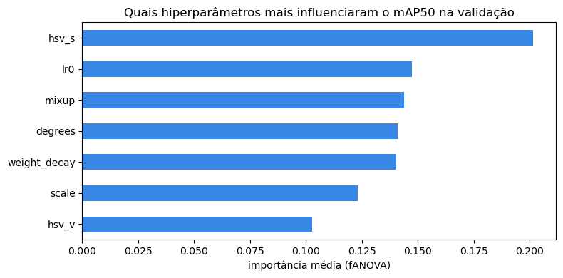

exp15 — YOLO11l com hiperparâmetros otimizados pelo Optuna
Objetivo: repetir o exp09 (YOLO11l sobre os recortes com o macrófago mascarado, batch 8; mAP50 0,493 ± 0,152), trocando os hiperparâmetros escolhidos à mão pelos encontrados pelo Optuna. O modelo fica fixo no YOLO11l; outros modelos de YOLO serão testados depois.
Hipótese: os hiperparâmetros do exp09 vieram do exp06 e nunca foram ajustados para o dataset mascarado. Uma busca automática pode encontrar uma combinação melhor.
O que é o Optuna
O Optuna é um framework de otimização automática de hiperparâmetros. Em vez de testar combinações à mão, ele faz isto:
- propõe uma combinação de hiperparâmetros (uma tentativa);
- treina o modelo com ela e mede o resultado (aqui, o mAP50 na lâmina de validação);
- usa o histórico de todas as tentativas para escolher a próxima, e repete.
- Amostrador TPE (Tree-structured Parzen Estimator): separa as tentativas em boas e ruins e sorteia as próximas onde as boas se concentram. As 3 primeiras tentativas de cada fold exploram o espaço; depois a busca se concentra nas regiões promissoras.
- Poda (MedianPruner): a cada época, uma tentativa com mAP50 abaixo da mediana das anteriores na mesma época é interrompida, para não gastar tempo com combinações ruins. As 3 primeiras tentativas e as 5 primeiras épocas de cada uma nunca são interrompidas.
- Estudo: o conjunto de tentativas de uma busca. Fica salvo num banco SQLite (
optuna/estudos.db); se a execução parar, a busca continua de onde estava.
Protocolo: otimização aninhada, sem vazamento
Se a busca olhasse para as lâminas de teste, o resultado ficaria otimista. Por isso, ela é feita dentro de cada fold:
- Cada um dos 6 folds tem um estudo próprio, com 8 tentativas.
- Cada tentativa treina nas 5 lâminas de treino do fold por 15 épocas e é medida só na lâmina de validação do fold.
- As 2 lâminas de teste ficam fora da busca.
- O fold é treinado de novo com os seus melhores hiperparâmetros, no regime completo do exp09 (150 épocas, patience 40), e avaliado no teste.
A 1ª tentativa de cada estudo é a configuração do exp09. Assim, o Optuna só troca a configuração se achar algo melhor na validação.
Por que uma busca pequena: o YOLO11l leva ~8 s por época. Uma busca com 30 tentativas de 30 épocas levaria mais de 10 horas. Com 8 tentativas de 15 épocas e 7 hiperparâmetros, a previsão é de ~1,3 h de busca e ~1,5 h de treino final.
Limitações:
- Com só 8 tentativas, a busca explora pouco o espaço.
- Tentativas curtas (15 épocas, contra até 150 no treino final) favorecem configurações que aprendem rápido.
- Cada fold tem uma única lâmina de validação, então a escolha pode se ajustar às particularidades dela.
Espaço de busca
| Parâmetro | Faixa | exp09 | O que controla |
|---|---|---|---|
lr0 | 1e-4 a 2e-3 (log) | 5e-4 | Taxa de aprendizado inicial |
weight_decay | 1e-5 a 1e-3 (log) | 5e-4 | Regularização dos pesos |
hsv_s | 0,2 a 0,9 | 0,9 | Jitter de saturação (a cor varia muito entre lâminas) |
hsv_v | 0,2 a 0,7 | 0,6 | Jitter de brilho |
degrees | 0 a 30 | 15 | Rotação aleatória (graus) |
scale | 0,2 a 0,6 | 0,5 | Variação de escala (as leishmanias têm ~20 px) |
mixup | 0 a 0,3 | 0,1 | Probabilidade de mixup (mistura de duas imagens) |
Ficaram fixos, iguais ao exp09: modelo YOLO11l, dataset 03_recortes_512_sem_macrofago, imgsz 512, batch 8, AdamW, lrf 0,01, cos_lr, hsv_h 0,03, flipud 0,5, mosaico, seed 42.
| Notebook | exp15_yolo11l_optuna.ipynb |
| Modelo | yolo11l.pt (pré-treinado COCO, 25M parâmetros) |
| Saídas da busca | optuna/estudos.db (todas as tentativas), optuna/melhores_parametros.json (escolha de cada fold) |
| Status | concluído em 18 nov. 2026 (11h45–14h16, 2,5 h no total: busca + treino final dos 6 folds) |
Exemplos das imagens de entrada

Resultado
| Precisão | Recall | mAP50 | mAP50-95 | |
|---|---|---|---|---|
| exp15 (Optuna) | 0,520 ± 0,116 | 0,569 ± 0,064 | 0,510 ± 0,115 | 0,199 ± 0,040 |
| exp09 (mão) | 0,510 ± 0,136 | 0,551 ± 0,100 | 0,493 ± 0,152 | 0,192 ± 0,059 |
| Δ | +0,010 | +0,018 | +0,017 | +0,007 |
Conclusões:
- Maior mAP50 médio da série (0,510), à frente do exp12 (0,496). Ainda assim, o ganho sobre o exp09 (+0,017) está dentro do ruído entre folds (|Δ| < 0,03).
- As quatro métricas subiram juntas, e o desvio caiu de 0,152 para 0,115 (os folds ficaram mais parecidos).
- O Optuna melhorou 4 dos 6 folds no teste. Os maiores ganhos foram nos folds 4 e 6 (+0,065 e +0,064). Piorou nos folds 2 e 5.
- No fold 5, a busca achou na validação (leish_2) uma configuração melhor que a do exp09 (+0,031), mas ela foi pior no teste (−0,055). É o risco de escolher com uma única lâmina de validação.
- O mAP50-95 (0,199) empata com o do exp14, que é o melhor da série.
O que o Optuna escolheu
Em todos os folds, a 1ª tentativa (configuração do exp09) foi superada na validação. A escolha final de cada fold:
| Fold | lr0 | weight_decay | hsv_s | hsv_v | degrees | scale | mixup |
|---|---|---|---|---|---|---|---|
| 1 | 1,0e-4 | 1,3e-4 | 0,20 | 0,22 | 0,7 | 0,59 | 0,29 |
| 2 | 1,2e-4 | 1,0e-4 | 0,41 | 0,69 | 29,0 | 0,25 | 0,00 |
| 3 | 1,6e-4 | 1,7e-5 | 0,64 | 0,63 | 19,5 | 0,60 | 0,14 |
| 4 | 2,7e-4 | 1,5e-4 | 0,21 | 0,38 | 29,2 | 0,37 | 0,27 |
| 5 | 1,1e-4 | 1,7e-5 | 0,24 | 0,53 | 29,6 | 0,35 | 0,30 |
| 6 | 1,2e-4 | 1,1e-5 | 0,23 | 0,45 | 29,9 | 0,20 | 0,02 |
| exp09 | 5,0e-4 | 5,0e-4 | 0,90 | 0,60 | 15 | 0,50 | 0,10 |
Padrões que se repetem entre os folds (são a parte mais útil do experimento):
- lr0 menor: todos os folds escolheram de 1e-4 a 2,7e-4 (o exp09 usa 5e-4). Cinco deles ficaram colados no limite inferior da faixa (1e-4), então o ótimo pode estar abaixo dela.
- weight_decay menor: de 1e-5 a 1,5e-4, contra 5e-4.
- Menos jitter de saturação:
hsv_sde 0,2 a 0,4 em 5 folds, contra 0,9. É também o hiperparâmetro de maior importância (figura abaixo). - Mais rotação: 4 folds escolheram ~30°, o limite superior da faixa (o exp09 usa 15°).
scale,mixupehsv_vvariaram sem padrão claro.

hsv_s se destaca; os demais ficam próximos.Busca por fold
| Fold | Validação | Podadas | mAP50 val. exp09 | mAP50 val. melhor | Épocas (melhor) | mAP50 teste exp15 | exp09 | Δ |
|---|---|---|---|---|---|---|---|---|
| 1 | leish_4 | 2 de 8 | 0,202 | 0,295 | 92 (52) | 0,595 | 0,580 | +0,015 |
| 2 | leish_8 | 1 de 8 | 0,346 | 0,389 | 88 (55) | 0,612 | 0,627 | −0,015 |
| 3 | leish_9 | 3 de 8 | 0,609 | 0,635 | 59 (32) | 0,375 | 0,346 | +0,029 |
| 4 | leish_7 | 2 de 8 | 0,676 | 0,697 | 111 (73) | 0,510 | 0,445 | +0,065 |
| 5 | leish_2 | 3 de 8 | 0,421 | 0,453 | 61 (7) | 0,606 | 0,661 | −0,055 |
| 6 | leish_1 | 3 de 8 | 0,524 | 0,617 | 85 (29) | 0,364 | 0,300 | +0,064 |
"mAP50 val." é da busca (15 épocas). "Épocas (melhor)": épocas do treino final até o early stopping e, entre parênteses, a época do best.pt. No fold 5, a melhor época foi a 7: o modelo atingiu o pico cedo e não melhorou mais. A poda interrompeu 14 das 48 tentativas.
Por lâmina (mAP50 no teste)
| Lâmina | exp15 | exp09 | Δ |
|---|---|---|---|
| leish_1 | 0,518 | 0,553 | −0,035 |
| leish_2 | 0,343 | 0,346 | −0,003 |
| leish_3 | 0,272 | 0,352 | −0,080 |
| leish_4 | 0,222 | 0,198 | +0,024 |
| leish_5 | 0,600 | 0,583 | +0,017 |
| leish_7 | 0,698 | 0,711 | −0,013 |
| leish_8 | 0,373 | 0,324 | +0,049 |
| leish_9 | 0,589 | 0,547 | +0,042 |
A leish_5 (0,600) teve o maior valor de toda a série. A leish_8 (0,373), a leish_9 (0,589) e a leish_4 (0,222) ficaram perto dos melhores da série (0,380 no exp10, 0,590 no exp08 e 0,226 no exp11). A queda na leish_3 tem pouco peso, porque ela tem só 10 instâncias.
Próximo passo sugerido
- Usar os padrões encontrados como nova configuração fixa (por exemplo, lr0 1e-4, weight_decay 1e-4, hsv_s 0,25, degrees 30), sem busca, e testá-la com outros modelos, inclusive o YOLO11n, que é ~5× mais rápido.
- Se repetir a busca, deslocar as faixas: lr0 de 2e-5 a 5e-4 e degrees de 0 a 45.
Histórico
- 18 nov. 2026: a 1ª versão buscava só hiperparâmetros com o YOLO11n (interrompida após 2 minutos). A 2ª versão deixava o Optuna escolher também o modelo entre 9 opções, com 30 tentativas de 30 épocas por fold (previsão de 5 a 7 horas); foi cancelada para rodar em menos tempo.
- 18 nov. 2026: versão atual, com o modelo fixo no YOLO11l (o modelo do exp09, maior mAP50 entre os experimentos que só trocaram o modelo) e busca reduzida. Os outros modelos de YOLO serão testados num experimento seguinte.